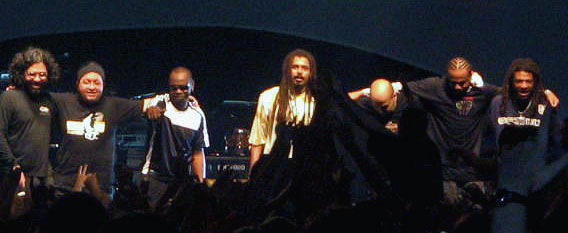
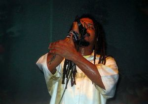
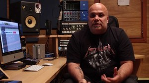
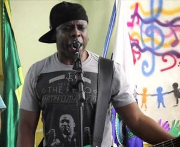
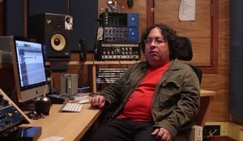
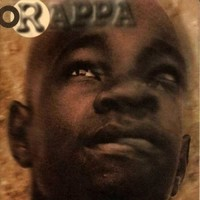
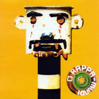
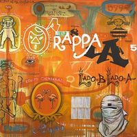
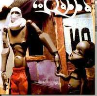

O Rappa - Biografia
Feita por: Matheus Afonso de Carvalho
Conteúdo:
História da banda (fonte: Wikipédia)

Em 1993, com a vinda do cantor ao Brasil, foi montada uma banda às pressas para acompanhar o cantor Papa Winnie em suas apresentações. Formada por Nelson Meirelles, na época produtor do Cidade Negra e de vários programas de rádios alternativas do Rio de Janeiro; Marcelo Lobato, que havia participado da banda África Gumbe; Alexandre Menezes, o Xandão, que já havia tocado com grupos africanos na noite de Paris e Marcelo Yuka, que tocava no grupo KMD-5. Após essa série de apresentações como banda de apoio do cantor, os quatro resolveram continuar juntos e colocaram anúncio no jornal O Globo para encontrar um vocalista. Dentre extensa lista de candidatos, Marcelo Falcão foi o escolhido.
Mesmo já tendo uma apresentação agendada no Circo Voador, o grupo não tinha nome. Cogitaram "Cão Careca" e "Batmacumba", e após ver no jornal a expressão "rapa", que designa o ato em que policiais interceptam camelôs, se empolgaram com o termo. Segundo Falcão, "era perfeito. Gíria de rua, coisa da rua: o que nós somos. Colocamos o artigo 'O' e mais um p, para ficar mais forte". Um exemplo de a palavra rapa ser aplicada aos caçadores de camelôs pode ser encontrado na canção "Óia o rapa!" na composição de Lenine e Sérgio Natureza, gravada pela banda no CD Rappa Mundi. Finalmente, com Falcão na voz, Marcelo Yuka na bateria, Xandão na guitarra, Nelson Meireles no contra-baixo e Marcelo Lobato no teclado, estava formado O Rappa. Em 1994, lançaram seu primeiro disco, que levou o nome da banda. O Rappa não obteve muito sucesso e foi o único disco com a presença de Nelson Meirelles, que abandonou a banda por motivos pessoais. Com a saída de Nelson Meireles, Lauro Farias, que tocava com Yuka no KMD-5, assumiu o contrabaixo. Em 1996, foi lançado Rappa Mundi, que praticamente introduziu a banda no cenário nacional e quase todas as canções foram sucesso. Entre elas, "Pescador de Ilusões", "A Feira", "Miséria S.A.", "Ilê Ayê", "O Homem Bomba", a regravação de "Vapor Barato" que ficou conhecida na voz de Gal Costa e a versão em português para o sucesso de Jimi Hendrix, "Hey Joe". Depois de três anos sem um álbum novo, em 1999 vem a público Lado B Lado A. Com letras "mais fortes" que o anterior, mostra o amadurecimento da banda e revela Yuka como letrista de alto nível em canções como "Minha Alma (a paz que eu não quero)", "O Que Sobrou do Céu", "Me Deixa" e "Lado B Lado A", além de Tribunal de Rua, que narra história baseada em fato real, conhecido na mídia como "Rambo, o torturador", que foi a capa da revista Veja de 9 de abril de 1997. Os videoclipe das duas primeiras foram premiadíssimos no Video Music Brasil, tornando-se sucesso nacional.
Em 2000, O Rappa causou "comoção pública e muita indignação" entre diversas bandas no Rock in Rio que ocorreria no ano seguinte, protestando contra a organização em especial com o horário de show, antes do Deftones. Foram retaliados com exclusão, e 5 bandas brasileiras saíram do festival em protesto (Skank, Raimundos, Jota Quest, Cidade Negra e Charlie Brown Jr.)
Marcelo Yuka
Em novembro de 2000, o baterista Marcelo Yuka foi vítima direta da violência urbana, ao ser baleado durante tentativa de assalto, ficando paraplégico e assim impossibilitado de tocar bateria. Lobato assumiu o instrumento (deixando para seu irmão Marcos Lobato, contribuinte do O Rappa, os teclados, este não entrou oficialmente para a banda) e O Rappa voltou a tocar. Mesmo debilitado, o baterista voltou ao grupo e no mesmo ano lançaram o disco Instinto Coletivo, com um show gravado em 2000, ainda com Yuka na bateria e três inéditas de sua autoria. Yuka desligou-se da banda deixando inimizade com os outros companheiros, alegando ter sido expulso por não concordar com o novo rumo que a banda vinha seguindo. Yuka fundou outro grupo, F.ur.t.o (Frente Urbana de Trabalhos Organizados), que faz parte de um projeto social homônimo, que, segundo Yuka, era algo maior do que O Rappa o possibilitava. A dedicação de Yuka ao projeto F.ur.t.o. pode ser vista mesmo durante sua estadia n'O Rappa: ele aparece com uma camiseta preta com o nome F.ur.t.o. em branco durante o vídeo clipe "Minha Alma (A paz que eu não quero)" vídeo clipe que deu toda a projeção ao O Rappa como movimento social e não somente uma banda de rock.
A banda decidiu seguir sem Yuka, com Lobato se tornando o baterista titular, e seu irmão Marcos se tornou músico de apoio nos teclados. Após cogitarem o poeta Waly Salomão como letrista, a morte deste fez Marcos Lobato assumir as letras. O primeiro disco reformulado foi O Silêncio Q Precede O Esporro , lançado em 2003, com diversas canções de sucesso como "Reza Vela", "Rodo Cotidiano" e "O Salto". Em seguida foi lançado o DVD homônimo, gravado ao vivo no Olimpo, Rio de Janeiro. Em 2005, atendendo a convite por parte da MTV Brasil, a banda gravou o especial Acústico MTV com participação de Maria Rita - que havia gravado "A Minha Alma" em um de seus discos - em "O que sobrou do céu" e "Rodo Cotidiano", e Siba, do Mestre Ambrósio, na rabeca em algumas canções. O disco também rendeu um DVD com algumas canções além das presentes no CD. No dia 7 de julho de 2007, O Rappa realizou um concerto na etapa brasileira do festival Live Earth no Rio de Janeiro. Em 2008, lançaram o álbum 7 Vezes. A faixa escolhida para primeiro single, "Monstro Invisível", chegou as rádios no dia 8 de julho e fez muito sucesso, sendo bastante executada. Destaque também para o segundo single, "Meu Mundo é o Barro" e o terceiro single "Hóstia". Em 22 de agosto de 2009, O Rappa fez um show na favela da Rocinha, que rendeu outro DVD. Em 2008, Marcelo Lobato voltou a assumir os teclados, Cleber Sena, que já tocava com a banda na percussão, assume a bateria até sua saída em 2013. Após a saída deste, Felipe Boquinha assumiu as baquetas.
Seguiram-se dois anos de pausa, explicados pelos músicos como necessidade de descansar após 15 anos na estrada. O Rappa voltou a tocar junto com shows na Marina da Glória em outubro 2011. Em 2013 lançam novo álbum intitulado Nunca Tem Fim..., com músicas como "Anjos (Pra Quem Tem Fé)" e "Auto-Reverse", com o qual 3 meses após lançamento, certificado de Disco de Ouro é atribuído ao novo álbum.
Integrantes:
| Foto |
Nome |
Data de Nascimento |
Instrumento |
|  |
Marcelo Falcão |
31 de maio de 1973 |
vocal, ocasionalmente violão e guitarra rítmica |
|  |
Alexandre Menezes (Xandão) |
25 de setembro de 1968 |
guitarra solo |
|  |
Lauro Farias |
Não informado |
baixo elétrico, vocal de apoio |
|  |
Marcelo Lobato |
Não informado |
teclados e vocal de apoio |
Discografia:
| Capa |
Nome |
Ano de Lançamento |
|  |
O Rappa |
1994 |
|  |
Rappa Mundi |
1996 |
|  |
Lado B Lado A |
1999 |
|  |
Instinto Coletivo |
2001 |
Links interessantes
Site do O Rappa
Myspace
Voltar topo da página